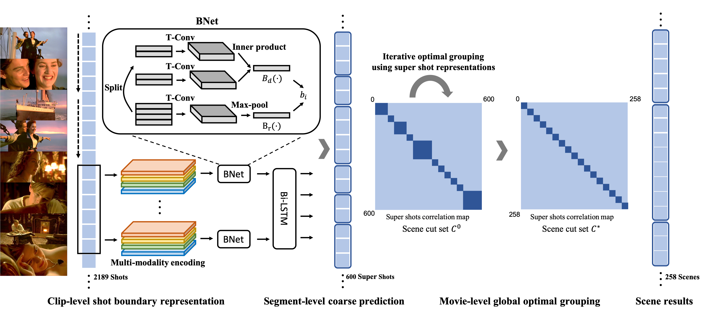
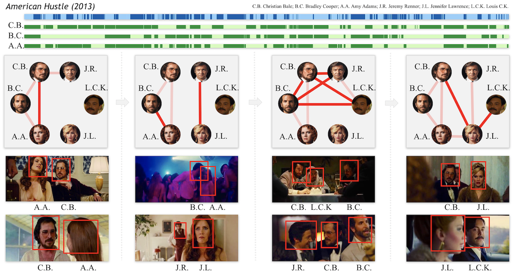

CUHK-SenseTime Joint Lab, The Chinese University of Hong Kong
Computer Vision and Pattern Recognition (CVPR) 2020, Seattle, USA

Overview
Scene, as the crucial unit of storytelling in movies, contains complex activities of actors and their interactions in
a physical location. Identifying the composition and semantics of scenes
serves as a critical step towards visual understanding of complex and long videos such as movies, TV episodes, entertainment shows and variety shows.
This work is going to help divide a long video into semantic continuous short videos and output a structural representation.
And it also provides research opportunities towards story/plot understanding in long videos with a semantic unit.
Introduction Video
Potential Applications
Human Interaction Graph Generation
The first line is American Hustle scene segmentation coming from scene detection, where dark blue
and light blue intertwine with each other to represent different Scenes. The second to fourth line corresponds to C.B. Christian Bale; B.C.
Bradley Cooper; A.A. Amy Adams Scenes occurrence time lines in this movie respectively, where the dark green means occurring while
light green does not. The graph below represents their interaction over the story line. The dark red represents a closer relationship while
the light red represents a far-away relationship and two demo pictures are shown for closer relationships.

Cross Movie Scene Retrieval
Given a specific scene in one movie and we retrieve similar ones in
other movies. For example,
we choose a conversation scene and a party scene from Ted (2012) as query, then retrieved scenes
from other movies.
@inproceedings{rao2020local,
title={A Local-to-Global Approach to Multi-modal Movie Scene Segmentation},
author={Rao, Anyi and Xu, Linning and Xiong, Yu and Xu, Guodong and Huang, Qingqiu and Zhou, Bolei and Lin, Dahua},
booktitle={Proceedings of the IEEE/CVF Conference on Computer Vision and Pattern Recognition},
pages={10146--10155},
year={2020}
}
Contact
Anyi Rao:
anyirao [AT] ie.cuhk.edu.hk Linning Xu:
linningxu [AT] link.cuhk.edu.cn